La Crisis Económica de 1929 , también conocida como la Gran Depresión , fue la mayor recesión económica en la historia del capitalismo. Se originó en los Estados Unidos con el colapso de la bolsa de valores de Nueva York en octubre de 1929, y rápidamente se propagó por todo el mundo, afectando a la mayoría de los países industrializados y provocando un colapso económico y social sin precedentes.
Causas de la Gran Depresión
La crisis de 1929 no fue el resultado de una única causa, sino de una combinación de factores interrelacionados:
La Caída de la Bolsa de Valores de Nueva York (Crack del 29): El 24 de octubre de 1929 (conocido como "Jueves Negro") y especialmente el 29 de octubre de 1929 ("Martes Negro"), se produjo un desplome masivo de las cotizaciones bursátiles en Wall Street. Esto se debió a una burbuja especulativa donde el valor de las acciones había crecido desproporcionadamente con respecto a la economía real.
Superproducción y Subconsumo: Durante la década de 1920 (los "Felices Años Veinte"), la producción industrial y agrícola había crecido de manera constante, pero la capacidad de consumo de la población no aumentaba al mismo ritmo. Esto llevó a una acumulación de stocks que no podían venderse, forzando a las empresas a reducir la producción y despedir personal.
Crisis Financiera y Pánico Bancario: El colapso bursátil llevó a la quiebra de miles de bancos. Mucha gente había invertido sus ahorros en la bolsa o los había depositado en bancos que, a su vez, habían invertido en acciones. La desconfianza generó un pánico bancario masivo, donde los ciudadanos retiraban sus depósitos, provocando más quiebras bancarias.
Sobreendeudamiento: Tanto las empresas como los particulares se habían endeudado excesivamente durante la época de bonanza. Con la caída de los ingresos y la producción, no pudieron hacer frente a sus deudas, lo que agravó la crisis bancaria.
Proteccionismo y Restricción del Comercio Internacional: Ante la crisis, muchos países adoptaron políticas proteccionistas (como la imposición de aranceles), lo que llevó a una drástica reducción del comercio mundial y dificultó la recuperación económica global.
Debilidad del Patrón Oro: El sistema monetario internacional basado en el patrón oro, aunque en teoría debía estabilizar las economías, demostró ser rígido y propagó la crisis de un país a otro al dificultar la devaluación de las monedas para impulsar las exportaciones.
Consecuencias Globales
Las repercusiones de la Gran Depresión fueron devastadoras a nivel mundial:
Desempleo Masivo: Millones de personas perdieron sus trabajos. En Estados Unidos, el desempleo alcanzó el 25% en 1933, y en Alemania, el 30%.
Caída de la Producción y el Comercio: La producción industrial mundial se redujo drásticamente, y el comercio internacional se contrajo entre un 50% y un 66%.
Pobreza y Hambre: El empobrecimiento generalizado, la indigencia y la hambruna afectaron a millones de familias, tanto en las ciudades como en el campo.
Impacto Político y Social: La crisis generó un clima de descontento social y radicalización política . En Alemania, por ejemplo, contribuyó al ascenso del nazismo, que prometía una solución a la crisis y el desempleo. En Estados Unidos, llevó a la implementación del New Deal de Franklin D. Roosevelt, un programa de intervención estatal para reactivar la economía.
Transformación de la Teoría Económica: La crisis de 1929 puso en entredicho las ideas económicas liberales clásicas, que postulaban la autorregulación del mercado. Surgieron nuevas teorías, como el Keynesianismo , que abogaban por la intervención del Estado en la economía para estabilizarla y promover el pleno empleo.
Impacto en Argentina
Argentina, con una economía fuertemente dependiente del comercio exterior (especialmente de la exportación de productos agrícolas y ganaderos a Europa), fue severamente afectada:
Caída del Comercio Exterior: Los ingresos fiscales provenientes del comercio exterior (80% en ese entonces) se desplomaron, ya que la demanda de productos argentinos en los países industrializados se redujo drásticamente.
Salida de Oro y Cierre de la Caja de Conversión: La crisis provocó una salida masiva de oro de la Caja de Conversión, lo que llevó al presidente Hipólito Yrigoyen a suspender su funcionamiento en diciembre de 1929.
Aumento del Desempleo: Los niveles de desempleo aumentaron de manera alarmante.
Golpe de Estado de 1930: La crisis económica fue uno de los factores que contribuyeron al primer golpe de Estado en Argentina en el siglo XX, que derrocó a Yrigoyen e inauguró la "Década Infame".
El Pacto Roca-Runciman: Para asegurar la venta de carnes al Reino Unido, Argentina firmó el controversial Pacto Roca-Runciman en 1933, lo que generó un intenso debate sobre la soberanía económica del país.
Industrialización por Sustitución de Importaciones (ISI): Paradójicamente, la imposibilidad de importar productos manufacturados debido a la crisis global y las restricciones de divisas impulsó un incipiente proceso de industrialización local en Argentina, buscando sustituir lo que antes se compraba en el exterior.
Galería de Imágenes Históricas
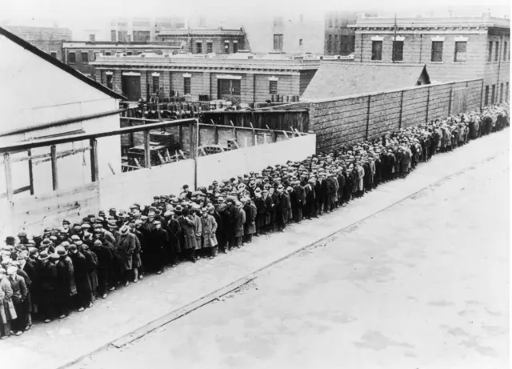
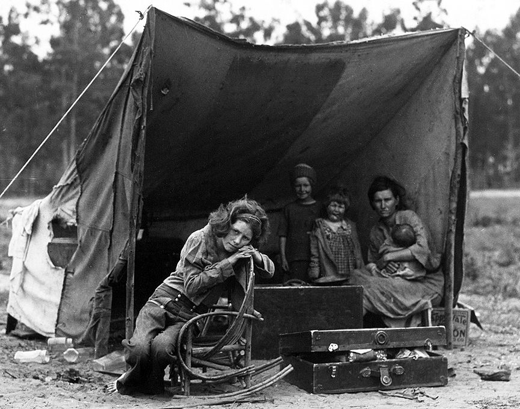
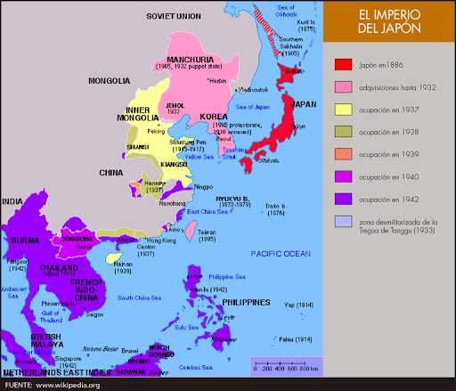
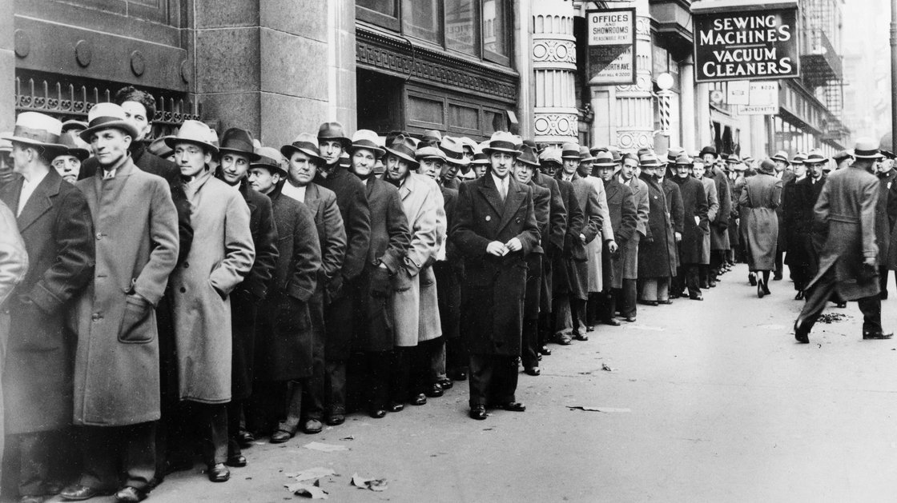
Trivia Histórica sobre la Crisis Económica de 1929
 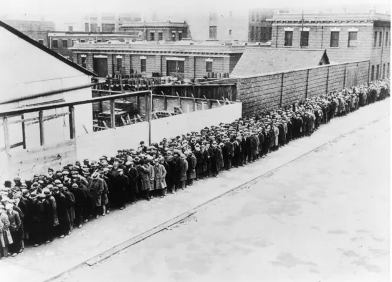
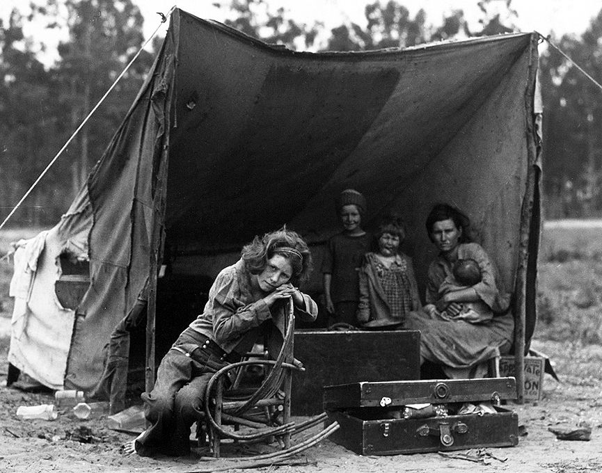
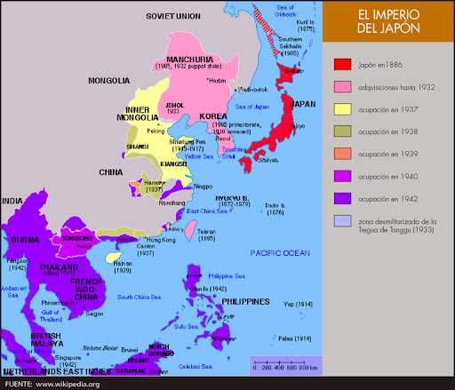
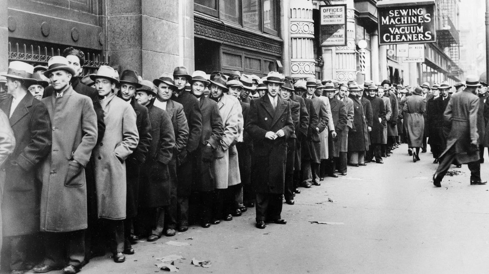
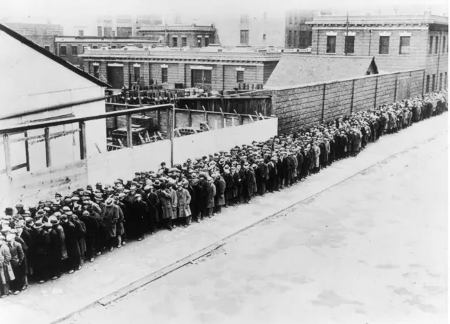
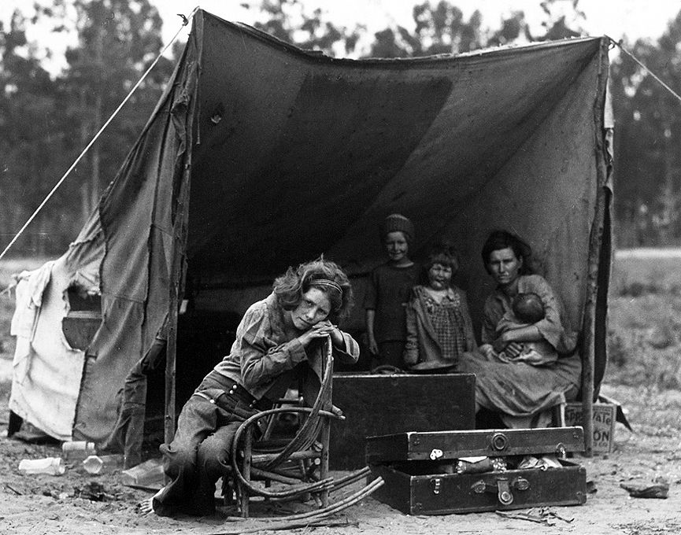
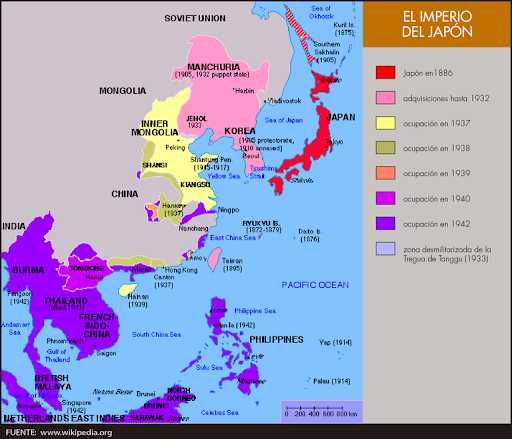
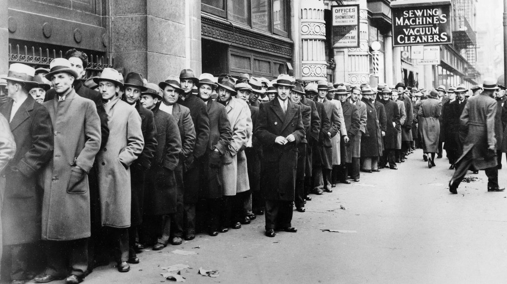